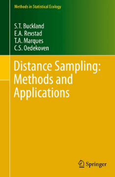

Case studies
Over time we have developed a number of examples, or case studies to help users experience how to use the R packages we have developed to perform a number of common tasks. Feel free to use the code provided as templates forming the starting point for your own analysis.
Buttons (e.g. Line transect) can be clicked to filter the examples. Reload the page to remove filter.
Analysis of double observer data
mark-recapture distance sampling
line transect
analysis
Analysis of point transect data
point transects
songbirds
analysis
Data formatting for dsm analysis
spatial model
line transect
analysis
Density surface model of dolphins
spatial model
line transect
analysis
Estimates from a multi-species survey
point transect
songbirds
covariates
analysis
Getting started with dssd
line transect
design
dssd
Inference regarding differences in density between strata
stratification
inference
line transects
analysis
Multiple strata in dssd
line transect
design
dssd
stratification
Simulation of combining strata
grouped strata
line transects
simulation
Take care when subsetting flatfiles by species
multi-species
line transects
analysis
No matching items
In addition to these, there are several more case studies not associated with specific R packages. Those case studies can be found at the website associated with the book Buckland et al. (2015)
